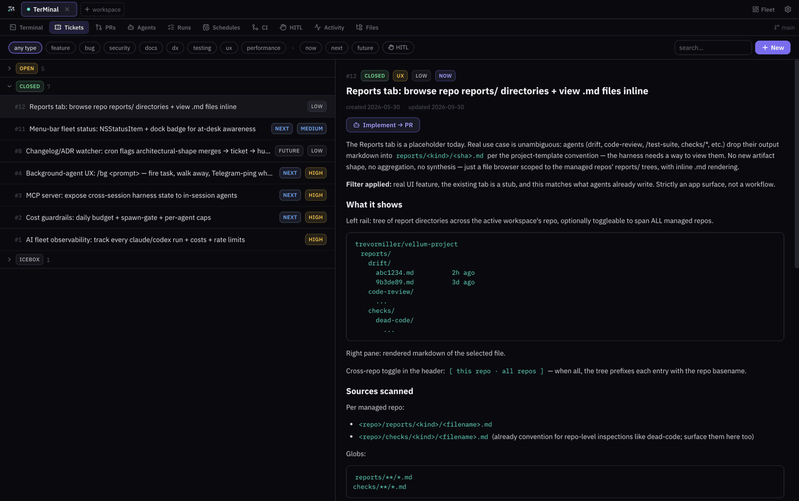
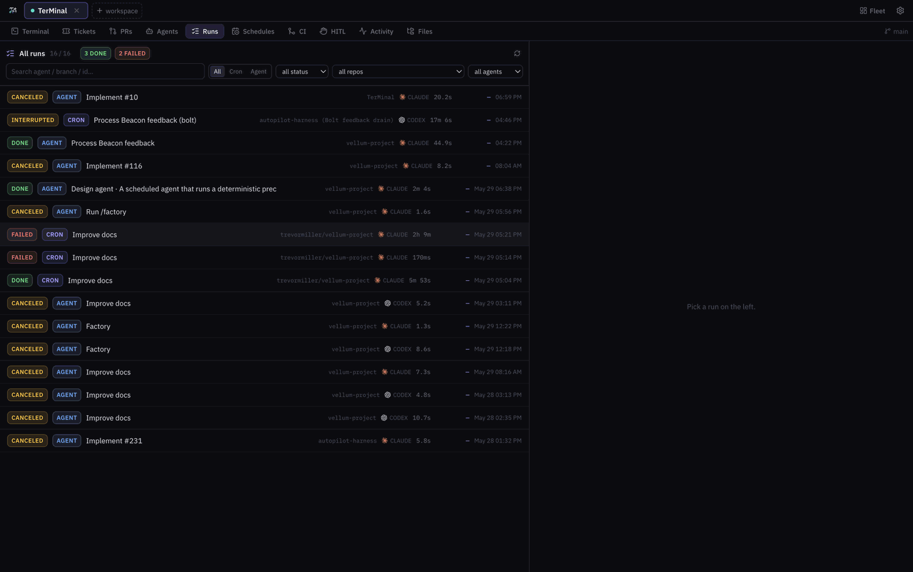
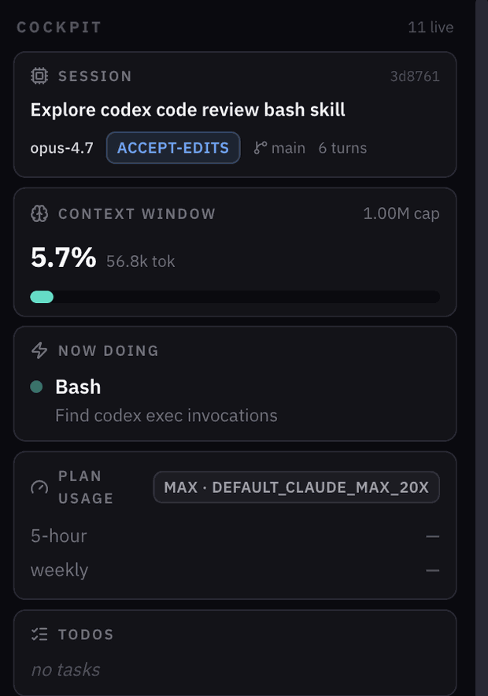

TerMinal
A software factory for coding agents. Hosts the real Claude Code and Codex CLI in a desktop cockpit — with tickets, scheduled runs, and cross-repo observability around them.
Apple silicon only. The build is unsigned — on first open, right-click the app and choose Open to get past Gatekeeper. Verify your download against SHA256SUMS.txt.

Not a wrapper. A workbench.
The agent CLIs you already use, running as real terminal sessions — plus the workflow layer they have always been missing.
Real agent sessions
Claude Code, Codex, or any local process in a real terminal tab. Sessions are resumable, and a live cockpit reads out context window, current tool call, and git state as it runs.
Work that outlives the tab
Tickets, pull requests, scheduled agents, run history, and human-approval gates are first-class tabs — so a task survives closing the session it started in.
Yours, on disk
No server and no account. Agents, schedules, plugins, and widgets are plain files you can read, diff, and commit alongside the repo they belong to.
Every run, accounted for
Scheduled and in-session runs land in one history, across every repo you manage.


Install
Take the DMG for the packaged app, or the source route if you want to hack on it.
Download the app
The packaged desktop build. Apple silicon, unsigned.
- Open the DMG and drag
TerMinal.appto Applications. - First launch: right-click the app → Open → Open.
- Onboarding detects your installed agent CLIs.
Build from source
Clones the repo and installs dependencies. Requires bun and git.
curl -fsSL https://raw.githubusercontent.com/trevormil/TerMinal/main/install.sh |
bash
- Clones to
~/TerMinal(pass a path to change it). - Then run
bun run devto launch.